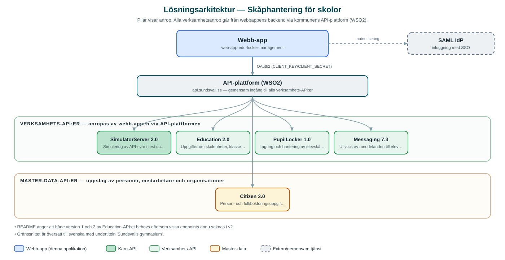

Skåphantering för skolor
Webbtjänst där skolpersonal administrerar elevskåp, kodlås och skåptilldelning på kommunens skolenheter.
Om applikationen
Skåphantering är ett verktyg för skolpersonal, med Sundsvalls gymnasium som utpekad verksamhet i gränssnittet. I tjänsten hanteras skolans elevskåp per skolenhet: personalen ser vilka skåp som finns, vilken status de har och vilken elev som disponerar respektive skåp.
Tjänsten hanterar även kodlås och koder kopplade till skåpen samt elevlistor med klasstillhörighet, så att skåp kan tilldelas, sägas upp och underhållas löpande under läsåret. Via kommunens meddelandetjänst kan information skickas ut, exempelvis i samband med skåptilldelning.
Inloggning sker med kommunens gemensamma inloggning (SAML) och åtkomst kan begränsas till särskilda AD-grupper.
Det här stödjer applikationen
- Skåpsöversikt per skolenhet – Lista, sök och filtrera skolans elevskåp med status och inställningar.
- Tilldelning av skåp till elever – Koppla skåp till elever och se vilka elever som saknar skåp.
- Hantering av kodlås – Administrera kodlås och koder kopplade till skåpen.
- Elevregister – Elever hämtas med klasstillhörighet från kommunens utbildnings- och folkbokföringsdata.
- Meddelandeutskick – Skicka meddelanden via kommunens meddelandetjänst, med avsändar- och svarsadresser i konfigurationen.
Teknisk dokumentation
Nedan beskrivs hur applikationen är uppbyggd, vilka API:er den använder och vad som krävs för att driftsätta den. Informationen är härledd ur källkoden och dess konfiguration på GitHub.
Arkitektur

Applikationen består av en webbaserad frontend (Next.js/React med sk-web-gui, i18next och Zustand) och en backend (Node.js/Express med routing-controllers, Prisma och Passport-SAML) som utvecklas i samma kodbas. Verksamhetsanrop går via kommunens gemensamma API-plattform (WSO2) – frontend pratar aldrig direkt med underliggande system. Inloggning: SAML (SSO), med möjlighet att kräva särskilda AD-grupper. Övriga integrationer som förekommer i koden: SAML IdP, WSO2 API-gateway.
Teknikstack
- Frontend: Next.js/React med sk-web-gui, i18next och Zustand
- Backend: Node.js/Express med routing-controllers, Prisma och Passport-SAML
- Test: Jest, Testing Library och Cypress
API-beroenden
Applikationen konsumerar följande API:er via kommunens API-plattform. Versionerna är hämtade ur källkodens API-konfiguration.
| API | Version | Användning |
|---|---|---|
| SimulatorServer | 2.0 | Simulering av API-svar i test och utveckling. |
| Education | 2.0 | Uppgifter om skolenheter, klasser och elever. |
| PupilLocker | 1.0 | Lagring och hantering av elevskåp och tilldelningar. |
| Messaging | 7.3 | Utskick av meddelanden till elever och vårdnadshavare. |
| Citizen | 3.0 | Person- och folkbokföringsuppgifter för elever. |
Konfiguration och driftsättning
- .env-filer för frontend och backend utifrån .env-exempel
- CLIENT_KEY/CLIENT_SECRET mot kommunens API-gateway (api-test.sundsvall.se)
- SAML-certifikat, nycklar och callback-adresser
- MUNICIPALITY_ID (2281), AD_GROUP för behörighetsstyrning
- Avsändaruppgifter för meddelandeutskick (SENDER_EMAIL, REPLY_EMAIL m.fl.)
Noterbart ur källkoden
- README anger att både version 1 och 2 av Education-API:et behövs eftersom vissa endpoints ännu saknas i v2.
- Gränssnittet är översatt till svenska med undertiteln 'Sundsvalls gymnasium'.
Källkod
Källkoden är öppen och finns hos Sundsvalls kommun på GitHub. I källkodsförrådet finns även instruktioner för att klona, konfigurera och starta applikationen i egen miljö.